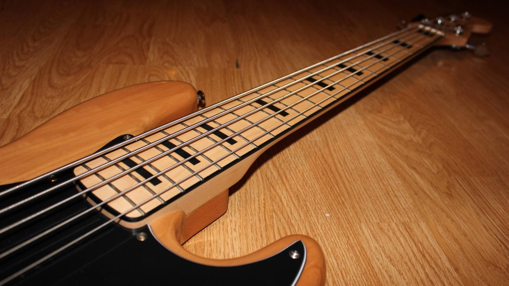

The bass guitar (also known as electric bass, or bass) is a stringed instrument similar in appearance and construction to an electric guitar, except with a longer neck and scale length, and four to six strings or courses. The four-string bass is usually tuned the same as the double bass, which corresponds to pitches one octave lower than the four lowest pitched strings of a guitar (E, A, D, and G). The bass guitar is a transposing instrument, as it is notated in bass clef an octave higher than it sounds. It is played primarily with the fingers or thumb, by plucking, slapping, popping, strumming, tapping, thumping, or picking with a plectrum, often known as a pick. The electric bass guitar has pickups and must be connected to an amplifier and speaker, to be loud enough to compete with other instruments.
Since the 1960s, the bass guitar has largely replaced the double bass in popular music as the bass instrument in the rhythm section. While types of basslines vary widely from one style of music to another, the bassist usually plays a similar role: anchoring the harmonic framework and establishing the beat. Many styles of music include the bass guitar, including rock, heavy metal, pop, punk rock, country, reggae, gospel, blues, symphonic rock, and jazz. It is often a solo instrument in jazz, jazz fusion, Latin, funk, progressive rock and other rock and metal styles.
Most electric bass guitars use magnetic pickups. The vibrations of the instrument's ferrous metal strings within the magnetic field of the permanent magnets in magnetic pickups produce small variations in the magnetic flux threading the coils of the pickups. This in turn produces small electrical voltages in the coils. Many bass players connect the signal from the bass guitar's pickups to a bass amplifier and loudspeaker using a 1/4" patch cord. These low-level signals are then strengthened by the bass amp's preamplifier electronic circuits, and then amplified with the bass amp's power amplifier and played through one or more speaker(s) in a cabinet.
Most basses have a volume potentiometer ("pot" or "knob"), which can be turned up or down, and a tone potentiometer, which rolls off the high frequencies when it is turned to the player's right. Some basses may also have a pickup selector control or switch, to select single-coil or humbucking pickups. Since the 1980s, basses are often available with battery-powered "active" electronics that boost the signal with a preamplifier and provide equalization controls to boost or cut bass and treble frequencies, or both. Some expensive basses have even more equalization options, such as bass, middle and treble.
The use of non-magnetic pickups allows bassists to use non-ferrous strings such as nylon, brass, polyurethane and silicone rubber. These materials produce different tones and, in the case of the polyurethane or silicone rubber strings, allow much shorter scale lengths.
Piezoelectric pickups (also called "piezo" pickups) are non-magnetic pickups that use a transducer to convert vibrations in the instrument's body or bridge into an electrical signal. They are typically mounted under the bridge saddle or near the bridge and produce a different tone from magnetic pickups, often similar to that of an acoustic bass. Piezo pickups are often used in acoustic bass guitars to allow for amplification without a microphone.
Click here to go back